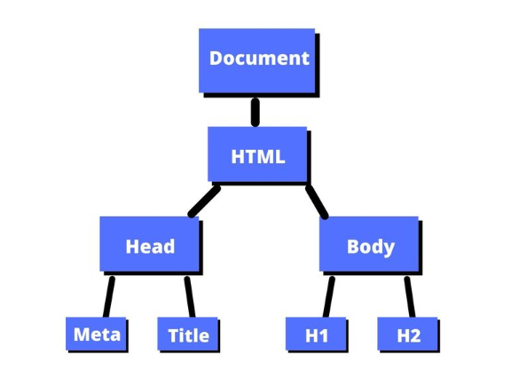
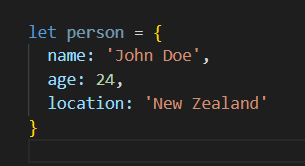
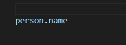
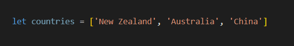
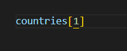
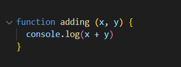
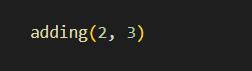

Javascript (JS) is a programming language, like HTML and CSS. Where HTML provides content on the page, and CSS is how the content is displayed, JS provides actions and interactions on the page. Javascript allows for a user to interact with a dynamic webpage without having to refresh the page everytime. This can be used for things like animations on a website, having a response, when you submit a form, or press a button.
Control Flow is basically the order in which a JS file is run. The standard means of operation for the control flow is that it will run from top to bottom, unless some form of coding is used to change the flow. Loops, are such things that affect control flow. Loops that can be used to repeat code a number of times based on the conditions placed on it. Once the condition is met to stop the loop, then the control flow reverts back to reading top to bottom. Another example is IF/ELSE statements. These are sections of code that have conditions. If the condition is met certain code is run and if the condition is not met, other code is used instead. In this instance the control flow might skip over pieces of programming.
An anology to view control flow and loops is say the task of doing laundry. There is a step by step way to do laundry that a person would do top to bottom: wash clothes in washing machine, dry them, fold them, put them away. Thats the standard flow of laundry. Now we know how to fold laundry but we do not just fold a piece of clothing, no, we fold them all. This is an equivalent to a loop. You will fold a piece of clothing over and over again. The condition to stop folding is when all the clothes are folded. Thats looping. And lastly If/Else statements. So say when we are drying the clothes its raining, we would have to dry the clothes in the dryer. If it was sunny, then we would hang the clothes outside. That is essentially an if/else statement. Depending on the circumstance, we dry clothes in one particular way, and ignore the second way altogether.
The DOM (Document Object Model), is the model of how a webpage is structured. The structure looks like a tree branch diagram, where the intial root is the document, and from there branches off all the componenets of the page. Below is an example:
From the image you can see that the branches are elements we are already familier with: head, body, h2 etc. Each branch that splits off eventually will end at one element only. Given each element has its own unique branch path from the main root (document) to it, means that we have a way to directly call upon that element. And that is basically the main benefits of the DOM, it provides a structure that allows us to interact with groups or individual elements.
Objects are like containers that you can use to store other bits of information in. The information stored in an object is unordered, and is stored in a key:value pair format. What that means is that for any piece of information in an object, there is a key which is like a descriptor for the information, and the value is the information. Objects look like this:
The object above contains information about a single individual. The object is called 'person' and has information about them. Note the key shows what the information is, and the value is the information. Using this key/value pair, we can then access information in the object. The notation used is a '.' between the object name and key name:
This code is accessing the value that is associated with the key 'name' in the object 'person'
Arrays are similar to objects in that they are also like containers that include information inside of them. However, unlike an object the items in the array are ordered (note: the order in arrays start at 0, not 1). And do not come in a key/value pair. Arrays look like this:
That array contains a list of countries, and it called 'countries'. To access a piece of information in an array'[]' is used:
This code is accessing the [1] ordered object in the array countries. It will return 'Australia' as remember that numbering in arrays starts at 0, 'New Zealand is at the 0 spot, and 'Australia' is at the 1 spot.
Function are code that are used to perform tasks. Rather than coding a task multiple times in each instance you want to use that code, you can make a function that performs a particular task once. Then whenever you want to do that task again, you can just call upon the function, rather than coding the task again. Example of a function:
You can add variables into the function too, that can be specified when you call the function. Note that a function does nothing on its own. You need to call upon the function for it to run. The function above takes the x value and y value and sums them together, and console logs the answer, when called. Below the function is run, and variables are added. So I have called upon the adding function. I have told it x = 2, y = 3. So, it should console log '5'.
